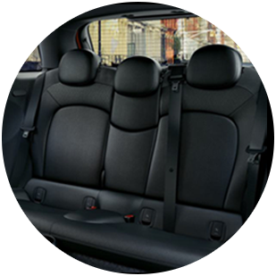
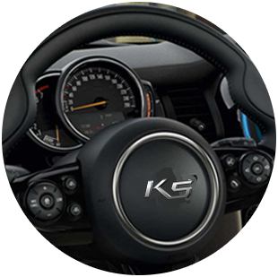
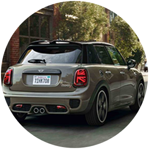

첨단 인터랙션 기술을 품은
미래형 세단 K5
EXTERIOR Eyes Stop
한 눈에 시선을 사로잡는 강렬한 디자인
- 
- 
- 
INTERACTIVE Play Interactive
운전자 및 주변환경과 능동적으로 상호작용하는 첨단 인터랙션 기술
SAFETY The Joy Of Driving
첨단 운전자 보조 시스템과 안전기술로 가장 앞선 드라이빙 경험을!
INTERIOR 미래적인 실내공간
운전자를 위한 가장 진화된 실내공간
새들 브라운 인테리어와 빌트인 캠으로 당신에게 좋은 경험을 선사합니다.